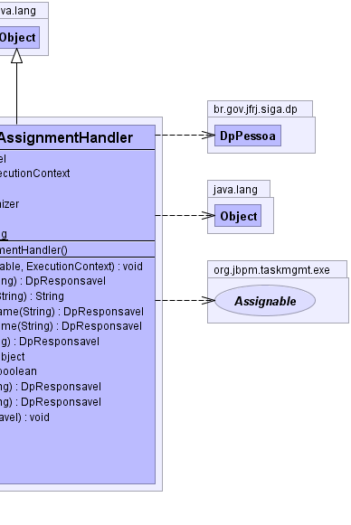

br.gov.jfrj.siga.wf.util.WfExpressionAssignmentHandler
br.gov.jfrj.siga.wf.util.WfExpressionAssignmentHandler
|
|||||||||
| PREV CLASS NEXT CLASS | FRAMES NO FRAMES | ||||||||
| SUMMARY: NESTED | FIELD | CONSTR | METHOD | DETAIL: FIELD | CONSTR | METHOD | ||||||||
java.lang.Object
public class WfExpressionAssignmentHandler
Implementa a linguagem de designação de atores para realizar as tarefas, baseado no componente de controle de identidade presente no siga-cp.
syntax : first-term --> next-term --> next-term --> ... --> next-term
first-term ::= previous |
swimlane(swimlane-name) |
variable(variable-name) |
user(user-name) |
group(group-name)
next-term ::= group(group-type) |
member(role-name)
 |
 |
| Field Summary | |
|---|---|
protected DpResponsavel |
entity
|
protected org.jbpm.graph.exe.ExecutionContext |
executionContext
|
protected java.lang.String |
expression
|
private static org.apache.commons.logging.Log |
log
|
private static long |
serialVersionUID
|
protected org.jbpm.identity.assignment.TermTokenizer |
tokenizer
|
| Constructor Summary | |
|---|---|
WfExpressionAssignmentHandler()
|
|
| Method Summary | |
|---|---|
void |
assign(java.lang.String expression,
org.jbpm.taskmgmt.exe.Assignable assignable,
org.jbpm.graph.exe.ExecutionContext executionContext)
Designa uma pessoa ou lotação a uma tarefa ou raia (assignable). |
protected DpResponsavel |
getGroupByName(java.lang.String groupName)
Retorna a lotação referente ao nome passado como parâmetro. |
protected java.lang.String |
getSwimlaneActorId(java.lang.String swimlaneName)
Retorna o id do ator designado para a raia (swimlane). |
protected DpResponsavel |
getUserByCategoryName(java.lang.String regex)
Retorna a pessoa referente a função passada como parâmetro, se o usuário não for encontrado na lotação, escala para a lotação superior e assim por diante até encontrar um usuário que possua a função especificada. |
protected DpResponsavel |
getUserByFunctionName(java.lang.String regex)
Retorna a pessoa referente a função passada como parâmetro, se o usuário não for encontrado na lotação, escala para a lotação superior e assim por diante até encontrar um usuário que possua a função especificada. |
protected DpResponsavel |
getUserByName(java.lang.String userName)
Retorna a pessoa referente ao nome passado como parâmetro. |
protected java.lang.Object |
getVariable(java.lang.String variableName)
Retorna a variável do contexto de execução, caso exista. |
protected boolean |
isChief(DpPessoa pes)
Verifica se uma pessoa é chefe. |
protected DpResponsavel |
resolveFirstTerm(java.lang.String term)
Resolve o primeiro termo da expressão. |
protected DpResponsavel |
resolveNextTerm(java.lang.String term)
Resolve o próximo termo da expressão. |
void |
setEntity(DpResponsavel entity)
|
| Methods inherited from class java.lang.Object |
|---|
clone, equals, finalize, getClass, hashCode, notify, notifyAll, toString, wait, wait, wait |
| Field Detail |
|---|
private static final long serialVersionUID
protected java.lang.String expression
protected org.jbpm.graph.exe.ExecutionContext executionContext
protected org.jbpm.identity.assignment.TermTokenizer tokenizer
protected DpResponsavel entity
private static final org.apache.commons.logging.Log log
| Constructor Detail |
|---|
public WfExpressionAssignmentHandler()
| Method Detail |
|---|
public void assign(java.lang.String expression,
org.jbpm.taskmgmt.exe.Assignable assignable,
org.jbpm.graph.exe.ExecutionContext executionContext)
expression - assignable - executionContext - protected DpResponsavel resolveFirstTerm(java.lang.String term)
term -
protected boolean isChief(DpPessoa pes)
pes -
protected DpResponsavel resolveNextTerm(java.lang.String term)
term -
protected java.lang.Object getVariable(java.lang.String variableName)
variableName -
protected DpResponsavel getGroupByName(java.lang.String groupName)
groupName - - nome da lotação
protected DpResponsavel getUserByName(java.lang.String userName)
userName - - Nome do usuário
protected DpResponsavel getUserByFunctionName(java.lang.String regex)
userName - - Nome do usuário
protected DpResponsavel getUserByCategoryName(java.lang.String regex)
userName - - Nome do usuário
protected java.lang.String getSwimlaneActorId(java.lang.String swimlaneName)
swimlaneName -
public void setEntity(DpResponsavel entity)
|
|||||||||
| PREV CLASS NEXT CLASS | FRAMES NO FRAMES | ||||||||
| SUMMARY: NESTED | FIELD | CONSTR | METHOD | DETAIL: FIELD | CONSTR | METHOD | ||||||||